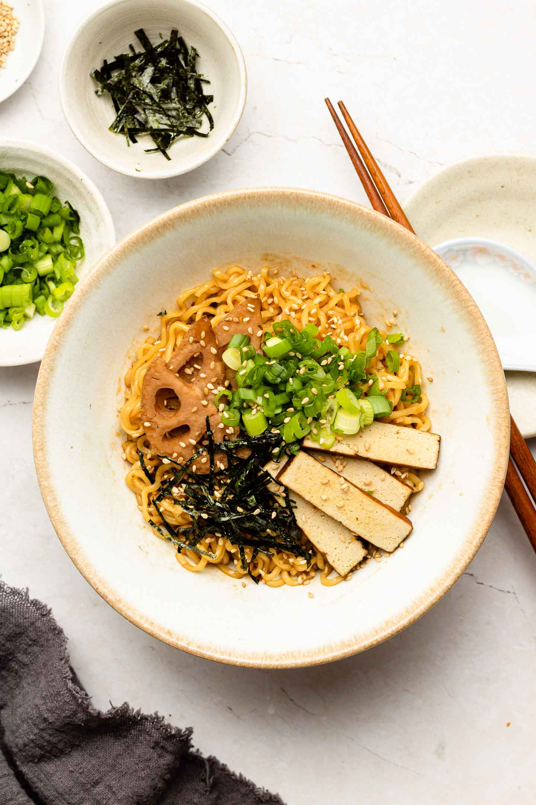

Intro to: Soba/Aburasoba

Here are some of my favorites, and some tips on where to go.
Description:
Abura soba, also known as mazesoba, is a popular Japanese dish consisting of noodles mixed with a sauce of oil, soy sauce, and other seasonings, without the traditional broth found in ramen
Aburasoba's origins are in Kitatama, Japan in the 1950's
Soba is a thin, Japanese noodle made primarily from buckwheat flour, often served hot in broth or cold with a dipping sauce
It originated in China and then was introduced to Japan around 300 - 100,000 BC.
Where to go:
My personal favorite place for Aburasoba currently is Kajiken which has many different locations over the United States. I go to the one in San Mateo regularly.